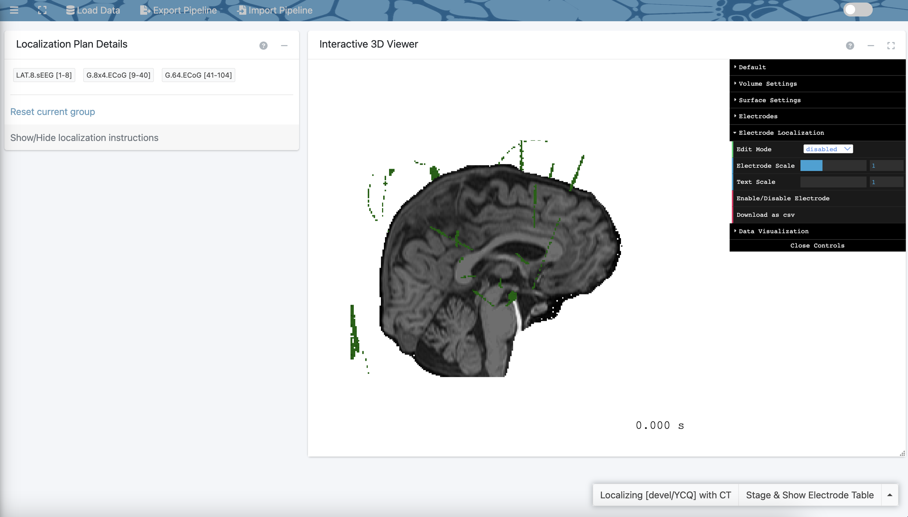

5.5 Surface & Electrodes
The surface & electrodes section is composed of two modules: Reconstruction & Coregistration and Electrode Localization.
5.5.1 Reconstruction & Coregistration
The Reconstruction & Coregistration module has three main goals: import raw magnetic resonance (MR) and computerized tomography (CT) images into RAVE, reconstruct a model of the subject’s cortical surface, and align the imported MRI & CT images. These tasks are important to ensure proper running of the Electrode Localization module.
There are two panels to note: Data settings and Command-line settings. Refer to the following screenshot for guidance.

Sample Reconstruction & Coregistration Window
Data Settings:
Start by using the project and subject drop down menus to select the subject whose MRI and CT images that will be imported. Once again, using the blue “sync project & subject from [Import LFP] module” link at the bottom of the panel will automatically select the project and subject that was just being worked on.
Next, use the MRI drop down menu to select the raw MRI image for the selected subject. RAVE currently accepts two input types for MRI images:
- DICOM: submit a folder of DICOM files, representing a series of 2D brain slices
- Nifti: submit a single Nifti file representing the full 3D brain scan (e.g. subject_MRI.nii)
Then, use the Raw CT DICOM folder drop down menu to select the raw CT image for the selected subject. Your input should be a DICOM folder.
For more information on these file formats, visit the Q&A at Reconstruction & Coregistration.
Then, proceed to the command-line settings panel.
Command-line settings:
The following steps will involve the computer’s command-line interface. (On Mac, this refers to the Terminal. On Windows, it refers to Command Prompt.) RAVE requires the use of the external programs dcm2niix and FreeSurfer, and then either FSL or AFNI. This panel simply confirms whether the programs were downloaded by displaying the location of the program on the computer. If the file path is not automatically filled in for dcm2niix, FreeSurfer, and your choice of FSL or AFNI, please return to the installation guide at Install External Programs and follow the steps to download the missing software. Descriptions of what these programs do are also available in the installation guide.
Now, click the blue Check data and command-line tools button. A pop-up will appear confirming the MRI/CT inputs and what tasks will be completed using the external programs. Please also pay attention to any warnings that will be listed (e.g. if RAVE can not find FSL-flirt, if there is an existing FreeSurfer reconstruction for a subject). In particular, warnings that say “the script will fail/error” should not be ignored, as that indicates some tasks will can not be completed. (For help resolving common warnings, visit the Q&A at Reconstruction & Coregistration.) When ready, hit “proceed”.
The following screen will appear, with four panels: Subject Information, Import DICOM Images, Surface Reconstruction, and Co-Registration CT to T1. Refer to the following screenshot for guidance.

Sample Reconstruction & Coregistration Screen
Subject Information: The project and subject whose MRI and CT data is currently being used will be displayed here. A task list will also be displayed. By default, three tasks will be listed: 1). Convert .dcm images to .nii, 2). Surface reconstruction, and 3). CT co-registration.
Import DICOM Images: Begin here to convert MRI and CT DICOM images to the Nifti format using the dcm2niix external library. The Nifti format will be used by FreeSurfer and FSL/AFNI in later steps. Press on the “+” sign in the right corner of the panel to expand the view.
Note: This script requires the Unix
bashterminal in order to run commands read from the command-line interface. If using a Mac, this should already be provided. If using Windows, please install the Linux sub-system (WSL2).
Specify the following configurations using the drop-down menu:
Merge 2D slices from same series regardless of echo, exposure, etc: Select “yes” to force stacking of the slices. Select “no” to separate images according to their echo (MRI), study times, exposure level (CT), orientation, etc for reasons such as preserving contrast. Select “auto” for
dcm2niixto automatically decide whether to merge based on the image modality (i.e. MRI vs CT). Note that merging will consolidate slices from the series into oneNiftifile, whereas merging can generate multipleNiftifiles.Crop 3D acquisitions: Select “yes” to remove excess air as well as neck tissue from the 3D acquisitions. Select “no” if this is not necessary. Select “ignore” for images to be neither cropped nor rotated to the nearest orthogonal direction to canonical space (e.g. for non-anatomical scans).
Based on these configurations, a series of commands will be automatically generated in the greyspace below. Click the sideways black triangles at the bottom left of the panel to view these commands. Note that there are separate series of commands for the MRI and CT images.
Note: The grey text represents comments. The purple texts are the actual commands that will be run by the computer.
RAVE provides the choice of copying these commands and running them on the computer’s command-line interface manually. This is recommended as other RAVE features can still be used while the commands run in the background, which is especially helpful if the commands will take a long time. Select the blue “save & run by yourself” button; a pop-up will appear and pressing the greyspace will automatically copy the commands.
Alternatively, RAVE can run the commands directly. Simply select the grey “Run from RAVE (T1 MRI)”. A pop-up will appear indicating when dcm2niix has finished converting the MRI images from the DICOM to Nifti format (note that if the MRI file was already in the Nifti format, RAVE will simply make a copy of that file). Then, select the “Run from RAVE (CT)” button to repeat this process with the CT image. These processes usually take a few seconds.
The resulting Nifti MRI and CT files will be stored in an inputs folder within the subject’s rave-imaging folder.
Surface Reconstruction:
This panel reconstructs a subject’s cortical surface using FreeSurfer and the Nifti MRI file.
>Note: This script requires the Unix bash terminal in order to run commands read from the command-line interface. If using a Mac, this should already be provided. If using Windows, please install the Linux sub-system (WSL2)
Start by selecting the Nifti MRI File desired. (The blue “refresh” link can be pressed to update the drop-down if changes have recently been made to the subject’s folder.) Next, select the recon flag, which refers to which FreeSurfer steps are desired for the reconstruction of the brain model. Visit the FreeSurfer website to learn more about the seven choices. Use the drop-down menu on RAVE to select the recon flag that is fitting for the project. A screenshot has been included below for convenience indicating the steps each flag includes:
 > Note: Most flags can take several hours for the computer to run. If the quickest flag is desired, select -autorecon1 in the drop-down menu; it includes minimal steps and so only takes 10 minutes to run.
> Note: Most flags can take several hours for the computer to run. If the quickest flag is desired, select -autorecon1 in the drop-down menu; it includes minimal steps and so only takes 10 minutes to run.
Proceed to the “Remove existing work before running the command (if applicable)” checkbox. Selecting the box is appropriate if the subject’s cortical surface was already partially or fully reconstructed and it is desired to start anew (e.g. if an error resulted due to a licensing issue). By default, this will be unchecked.
Commands will be generated in the greyspace below. Click on the black triangle at the bottom of the panel to view the commands. Once again, to run them manually, click the blue “Save & run by yourself” button. To have RAVE invoke system command, select the “Run from RAVE” button.
A pop-up will appear indicating when the process is completed; at that point, outputs will have been stored in a newly created fs folder in the subject’s rave-imaging folder.
Co-Registration CT to T1:
This panel will align and overlay (aka “co-register”) the subject’s MRI & CT images using either FSL or AFNI.
Note: This script requires the Unix
bashterminal in order to run commands read from the command-line interface. If using a Mac, this should already be provided. If using Windows, please install the Linux sub-system.
Use the drop down menu to select the CT file. (The blue “refresh” link can be pressed to update the drop-down if changes have recently been made to the subject’s folder.) Then use the program drop down to specify whether FSL or AFNI will be used.
Click the black triangle on the bottom of the panel to display the commands. Once again, select the appropriate button based on whether the commands will be run manually or through RAVE. Note that this process takes around 30 minutes; a pop-up will indicate when it is finished. The output will be a single ct_in_t1.nii.gz file representing the CT scan co-registered with the MRI image. The file is stored in the coregistration folder within the subject’s rave-imaging folder.
Now, proceed to the electrode localization module to begin identifying electrodes!
5.5.2 Electrode Localization
RAVE’s electrode localization module features a built-in 3D viewer and allows for the quick and precise identification of where in the brain electrodes are located. The module is based on the co-registered image of the CT and MRI scans, as well as the reconstruction of the subject’s cortical surface via the MRI scan.
When the electrode localization module is selected, two panels will appear on the screen: Data Selection & Electrode Plan. Refer to the following screenshot for guidance.
 Data Selection:
Data Selection:
Begin in the data selection panel at left. Use the project and subject drop down menus to select the subject whose electrodes you wish to localize. You can once again use the “Sync from [Import LFP] module” to automatically select the project and subject that was just imported.
Next, use the drop down menu in choose CT aligned to T1 to select the Nifti file representing the co-registered CT and MRI scans (e.g. ct_in_t1.nii that was generated in the previous module). It is alternatively possible to directly upload a co-registered Nifti file by selecting the “upload” option and resulting “browse” button. Note that if changes have been made to the file directory, selecting the blue “refresh file list” link will update the drop down menu.
If it is preferred not to localize with the CT image (such as in cases where a CT scan is not yet available), select the checkbox “Do not localize with CT.” The subject’s MRI image will be used in lieu. By default, this will be unchecked as using a co-registered CT and MRI image allows for more precise localization of electrodes.
Proceed to the Electrode Plan panel.
Electrode Plan:
This panel allows for the creation of groups to provide a more organized way to localize a subject’s electrodes.
As many or as few groups can be created as desired. Scroll to the bottom of the panel to use the plus button to add a new group, or the minus button to delete the bottom-most group.
For each group, specify the:
Label: the desired name for the group.
Dimension: the number of electrodes within the group.
Note: For electrode groups placed in a grid, it is recommended to input the dimensions in the format “number x number,” e.g. “8x4”, rather than specifying a whole number total, e.g. 32. Using this format can help automatically set the 3D viewer’s configurations for easier localization of electrodes.
- Type: the type of exam the electrodes came from. Select from electroencephalogram (EEG), intracranial EEG (iEEG), stereotactic EEG (sEEG), ElectroCochleoGraphy (ECoG), or “other”.
Note that for each group, a summary will be displayed to indicate the individual electrode labels (e.g. G1 - G32), as well as total number of electrodes.
When the groups are ready, click the blue Load Subject button to proceed. If there are any errors, a pop-up will appear indicating the error and a recommended fix (e.g. “invalid CT file. Please specify or upload your own.”) If there are no errors, a “loading in progress” pop-up will appear indicating that the coregistered file and 3D viewer are being loaded. This process can take a few minutes.
Once finished, the 3D viewer screen will automatically appear, with two panels: Localization Plan Details and Interactive 3D Viewer. Refer to the following screenshot for guidance:
 Notice that the right panel contains the 3D Viewer, which consists of the subject’s reconstructed brain model shown in black/white and their electrodes shown in green. Use the computer’s mousepad to zoom in and out of the model.
Begin in the Localization Plan Details panel on the left, which displays the groups created on the previous screen. Begin by selecting a group to localize its electrodes. A table will appear with a row for each electrode in the group and columns specifying each electrode’s label, tkrRAS location, MNI152, and FSLabel.
tkrRAS is a surface coordinate system used by FreeSurfer, where R orients toward the right direction, A orients toward the anterior direction, and S orients toward the superior direction. By default, these values will be set to 0,0,0. MNI152 is a volumetric coordinate system derived from averaging 152 individuals’ MRI scans. By default, these values will be empty. (To learn more about these coordinate systems, visit the Q&A at Electrode Localization.) FSLabel represents the anatomical location of the electrode. By default, these values will be empty.
Now, click on the Show/Hide Localization Instructions button at the bottom of the panel to receive specific instructions on how to use the 3D viewer to localize the selected group’s electrodes. Generally speaking, steps will consist of:
In the Electrode Localization settings on the 3D viewer, change
Edit Modefrom disabled toCT/Volumeif the subject’s CT scan is available, orMRI sliceif no CT is available.Double click on the green spot that represents the first electrode of the group. This will mark the spot with a yellow circle labeled “1,” as well as automatically update the tkrRAS and MNI152 coordinate locations of this electrode in the table. Repeat this step for the last electrode of the group.
In the Electrode Localization settings on the 3D viewer, change
Interpolate Sizeto the total number of electrodes - 2.In the Electrode Localization settings on the 3D viewer, click
Interpolate from Recently Addedfor RAVE to automatically localize the remaining electrodes in the group. Notice that these electrodes will be labeled on the 3D viewer with yellow circles and coordinate locations will automatically be filled in on the table.
(To refine the electrode locations, set Edit Mode to “refine” and then press the Auto-Adjust All button. Alternatively, manually select a single electrode. It will turn red and the keyboard keys 1, 2, and 3 can then be used to move the electrode around.)
Double-click on a row in the table to open a drop-down menu to set the FreeSurfer label of each electrode. RAVE can automatically select the anatomical region of the brain that the electrode is located in, or it can be selected manually.
Note: each electrode’s MNI152 coordinates are hyperlinked to Neurosynth, a platform for fMRI data. The link contains data on past maps, studies, and associations that have been associated with the electrode’s coordinates.
Repeat the localization steps for each group. When finished, to see all of the subject’s electrodes in one table, click the Stage & Show Electrode Table button in the bottom left corner of the screen. Click Save to Subject button to save this data for use in later RAVE sessions.
It may be helpful to adjust 3D viewer settings to more easily localize electrodes. There are various settings for the viewer that can be changed using the black box on the right side of the panel:
Default Settings:
Background color: change the background color of the viewer.
Record (chrome-on): clicking here will start recording the 3D viewer and clicking again will stop the recording. A video in the .webm format will automatically download to the computer. This feature can be used to generate a video of the localization process.
Screenshot: click here to take a screenshot of the current image in the 3D viewer. A .pdf file containing the image will automatically download to the computer.
Reset: reset the brain model to its default position.
Camera position: use the drop-down to change the view of the brain from the default
free rotate(change orientation freely by dragging the cursor) to[lock](preserve current orientation),right,left,anterior,posterior,superior, orinferior.Display coordinates: enabling this checkbox will display the tkRAS coordinate plane in the bottom left corner of the viewer.
Volume Settings:
These settings control aspects of the view of the 3D model and the CT overlay.
Show Panels: Enable this checkbox to simultaneously display the coronal, axial, and sagittal views of the brain. For each viewer, click anywhere on the brain to automatically adjust the other viewers to visualize that position. Clicking the
Pbutton will lock the viewer so that clicking on the brain will not readjust the other viewers’ positions. Note also that the+and-buttons can be used to zoom in and out of each viewer and the0button will reset the zoom back to default. Note that dragging the grey bar at the top of each view box can move the box elsewhere on the panel, and dragging the grey triangle at the bottom right corner will expand the box size.Reset Position: If the Show Panels checkbox is enabled, clicking this button will reset all three plane viewers (coronal, axial, and sagittal) to their default positions.
Use Coronal, Axial, and Sagittal sliders to quickly adjust the positions of the planes on the main and individual viewers. Moving the coronal slider from left to right will move that plane from the posterior to anterior end of the brain, respectively. Moving the axial slider from left to right will move that plane from the inferior to superior end of the brain, respectively. Moving the sagittal slider will move that plane from the left to right end of the brain, respectively. For each slider, a coordinte can also be entered manually to set the plane position. By default, each slider is set to 0. Note that keyboard shortcuts are shown in grey next to each slider.
Intersect MNI305: displays the coordinates in the MNI305 space where the coronal, axial, and sagittal planes intersect.
Use the overlay coronal, axial, and sagittal checkboxes to control whether each plane is visible on the main 3D viewer. By default, these are checked to show all three planes.
Dist. threshold:
- Use the Voxel Type: drop down menu to select which scan to overlay on the brain model in the 3D viewer. By default, this is set to
CTindicating that the subject’s CT is overlaid in green.
Use the Voxel Display: drop down menu to control whether or not the selected voxel type (i.e. CT) is visible or hidden on the 3D viewer. By default, it will be set to visible (
normal).Use the Voxel Opacity: slider to control the opacity of the voxel type selected, from 0 (transparent) to 1 (opaque). Note that a value can also be entered manually. By default, this is set to 1.
- Use the Voxel Min and Voxel Max sliders to adjust the threshold range for how much of the CT scan is visible on the 3D viewer. Setting this range is important to ensure clear viewing of the electrodes for easy localization. For example, reducing the minimum will display the skull on the 3D viewer. By default, the minimum is set to
3000and the maximum is set to3071as these values provide a clear view of the electrodes with minimum interference from the rest of the CT image.
Surface Settings:
These settings control aspects of the 3D model of the subject’s cortical surface.
- Use the Subject: drop-down menu to easily switch between which subject’s 3D brain model is displayed in the 3D viewer.
Surface Type:
Use the Surface Material: drop down menu to select a material to visualize the subject’s cortical surface. The materials,
MeshPhong(default) andMeshLambert, differ in how they display lighting of the 3D brain model. (See the Q&A at Electrode Localization for more information on this difference.)
Use the Left Hemisphere: and Right Hemisphere: drop-down menus to set the visualization of each hemisphere as
normal(complete, solid representation of cortical surface),wireframe(simplified, skeletal representation of cortical surface using lines), orhidden(hemisphere not displayed). By default, each hemisphere is set tonormal.Use the Left Opacity: and Right Opacity: sliders to control the opacity of each hemisphere, from 0 (hemisphere not displayed) to 1 (hemisphere fully-rendered). Note that a value can also be entered manually. By default, each slider is set to 1.
Use the Surface Color: drop-down menu to control how the color of the 3D brain model is rendered. By default, this is set to
vertices, but other options includesync from voxels(note that selecting this will open two sliders for theblend factorandsigma, set to 0.4 and 3 by default),sync from electrodes(note that in addition to blend factor and sigma, adecayslider will also be displayed, set to 0.15 by default), ornone(no color rendering on model). (See the Q&A at Electrode Localization for more information on the differences between these color-rendering methods.)
Electrodes:
Map Electrodes:
Visibility:
Electrode Localization:
Data Visualization: